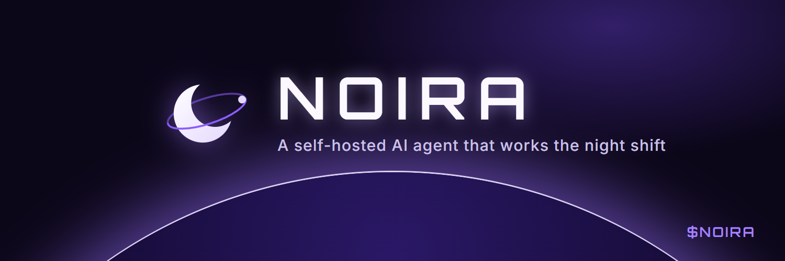

Crescent Orbit
The night-shift moon with a satellite on its orbit: an agent that keeps circling your work while you sleep. Closest to the current site mark.
NOIRA

logos/01-crescent-orbit.svg · 01-crescent-orbit-avatar.png (400×400) · 01-crescent-orbit-header.png (1500×500)